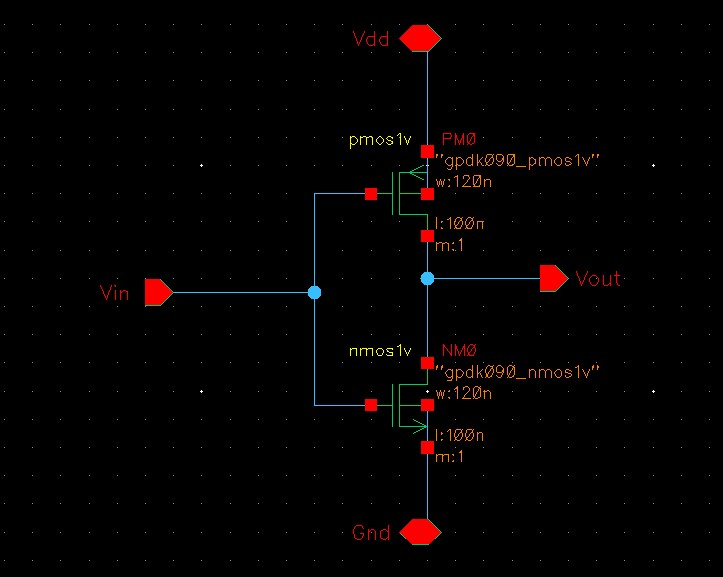
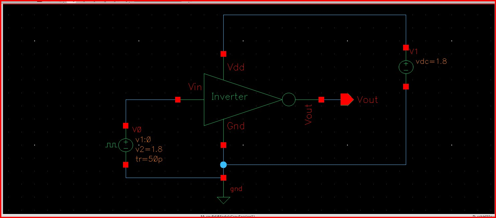
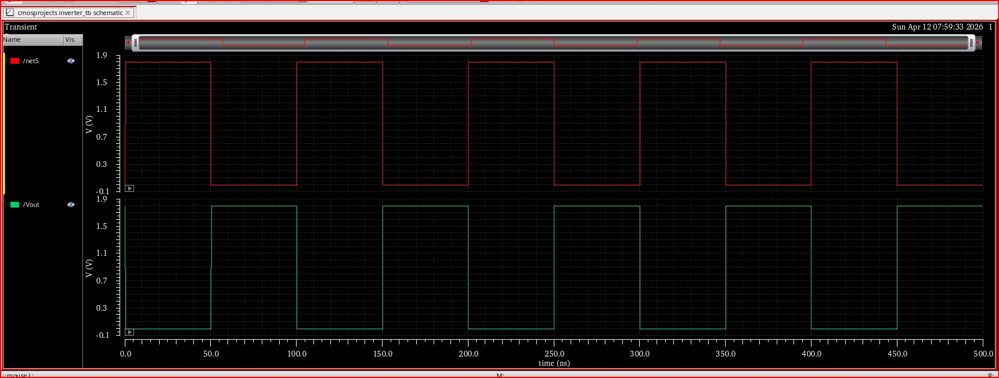

This project demonstrates the design and verification of a CMOS inverter using Cadence Virtuoso.
The work includes transistor-level schematic creation, a transient-analysis testbench, and waveform
verification using the Spectre simulator. The inverter is the fundamental building block of all CMOS
digital logic, making it an essential part of any IC design portfolio.
Objectives
Design a CMOS inverter using PMOS and NMOS transistors.
Build a testbench with a realistic input pulse source.
Simulate the inverter’s transient response.
Verify correct logic inversion behavior.
Analyze rise/fall times and switching characteristics.
Tools & Technologies
Cadence Virtuoso (Schematic, ADE)
Spectre Simulator
CMOS PDK (gpdk090)
Design Methodology
1. Transistor-Level Schematic
The CMOS inverter consists of a PMOS transistor connected between Vdd and Vout,
and an NMOS transistor connected between Vout and Gnd. Both gates are tied
together to form the input Vin.
PMOS: w = 120 nm, l = 100 nm
NMOS: w = 120 nm, l = 100 nm
Multiplicity: 1
2. Testbench Setup
A transient simulation testbench was created to evaluate the inverter’s switching behavior:
Input pulse source:
Low level: 0 V
High level: 1.8 V
Rise time: 50 ps
Supply voltage: Vdd = 1.8 V
Output node Vout monitored during simulation
3. Transient Simulation Results
The transient analysis confirms correct inverter operation:
Vin = 0 V → PMOS ON, NMOS OFF → Vout = High
Vin = 1.8 V → PMOS OFF, NMOS ON → Vout = Low
Output waveform cleanly inverts the input signal.
Full rail-to-rail voltage swing observed.
Results
Fully functional CMOS inverter.
Verified through transient simulation.
Correct logic inversion and switching behavior.
Demonstrates understanding of CMOS device physics and timing.
Key Learnings
CMOS inverter operation and transistor behavior.
Pulse-source configuration for digital testbenches.
Transient simulation setup and waveform interpretation.
Rise/fall time and propagation delay analysis.
Images

Transistor-level schematic of the CMOS inverter.

Testbench schematic used for transient simulation.

Transient simulation waveforms showing Vin and Vout.